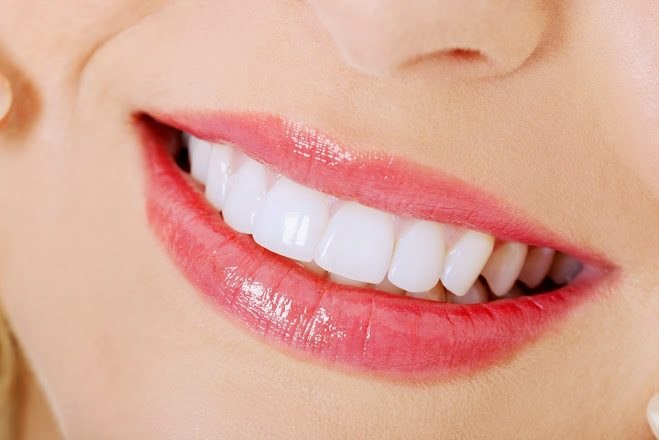

Odontologia Estética: O que é e como pode transformar seu sorriso
A odontologia estética já é uma realidade em muitos consultórios e se baseia na realização de procedimentos específicos com foco em melhorar a estética do sorriso. Mas o que exatamente ela abrange? Neste artigo, explicamos os principais tratamentos disponíveis na MD Frossard para você ter um sorriso mais bonito, natural e saudável.

Clareamento Dental
Dentro da odontologia estética, o clareamento dental talvez seja o tratamento mais simples e que pode apresentar resultados excelentes em pouco tempo. Isso porque não é necessário realizar nenhum desgaste ou procedimento cirúrgico no dente — apenas a aplicação do agente clareador.
Existem duas formas de realizar esse procedimento: no consultório dentário (resultado mais rápido e com supervisão profissional) e em casa com moldeiras personalizadas fornecidas pelo dentista. O Dr. Davi Frossard indica a melhor opção de acordo com o perfil de cada paciente.
Faceta Dentária e Lentes de Contato Dental
As facetas dentárias, ou também chamadas de lentes de contato dental, são atualmente as grandes "queridinhas" dentro da odontologia estética. A diferença entre elas está basicamente na espessura: as lentes de contato dental são geralmente mais finas e exigem menor desgaste do esmalte.
Esse tratamento visa restabelecer a estética do sorriso instalando pequenos fragmentos de cerâmica na face frontal do dente. É indicado para corrigir cor, formato, tamanho e pequenos alinhamentos. O resultado é um sorriso natural, bonito e duradouro.
Coroas Dentárias
As coroas dentárias são indicadas quando há grande destruição do dente por cárie ou fratura. Elas recobrem completamente a estrutura remanescente do dente e são confeccionadas seguindo a cor e o formato do dente natural do paciente, proporcionando um enorme ganho estético e funcional.
Existem vários tipos de materiais para a confecção de coroas: cerâmica pura, metal-porcelana, zircônia, entre outros. A escolha depende de cada caso e será avaliada pelos nossos especialistas.
Abordagem Premium
Nosso foco é criar sorrisos que harmonizem perfeitamente com o rosto de cada paciente, evitando um visual artificial. Cada sorriso é único — e tratamos dessa forma.
Cirurgia Gengival
A cirurgia gengival é o único tratamento considerado cirúrgico dentro da odontologia estética. Esse procedimento é realizado para harmonizar a relação de tamanho entre dente e gengiva, corrigindo o "sorriso gengival" (quando a gengiva aparece em excesso) ou a discrepância de tamanho entre os dentes.
Reabilitação Oral
Quando o caso é mais complexo e envolve múltiplos problemas estéticos e funcionais, recorremos à reabilitação oral — que nada mais é do que a junção planejada de todos esses tratamentos para alcançar a estética ideal. Pode envolver facetas, coroas, implantes, tratamento gengival e até ortodontia, tudo integrado em um único plano de tratamento.
Quer saber qual tratamento é o ideal para o seu sorriso? Agende uma consulta de avaliação na MD Frossard pelo (21) 3513-8479 ou via WhatsApp.